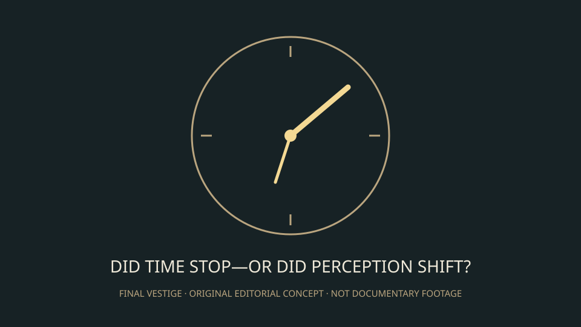

FINAL VESTIGE STUDIOS / INDEPENDENT BUYER'S FIELD GUIDE / UNPUBLISHED CONCEPT
Can twelve minutes of guided audio make starting a practice easier?
The hard part is rarely finding another promise about the brain. It is finding a repeatable twelve-minute slot you actually want to keep. Zen12 offers short downloadable listening sessions; the important question is what the package contains, what remains unproved, and whether a free routine already meets your needs.
Optional 42-second editorial film concept
Unencoded storyboard, not a playable video. The final rights-cleared media (if separately approved) would use an original, manually-started video with a local poster, native captions and transcript. No autoplay, tracking embeds, or third-party players.

Read the entire 42-second transcript (works without video or JavaScript)
00–07: Have you ever looked at a clock and watched its first second hang in place?
07–14: The clock hasn't stopped. A controlled study found a change in how the first moment is judged.
14–21: Rapid eye movements interrupt visual input. Our experience still feels continuous.
21–28: Scientists tested the timing—and what happened when the target appeared to move.
28–35: A vivid perception is real as an experience. The explanation still needs evidence.
35–42: Start with the free twelve-minute experiment. If you want audio later, ask what the product actually proves.
Caption draft: film.vtt. A playable media asset has not been encoded; browser testing and video rights review are still required.
A clock that seems to stop
Look toward the second hand of a quiet clock. Its first step can feel longer than the others. A 2001 laboratory study traced a related chronostasis illusion to timing judgments across rapid eye movements. Scientists measured perceived duration; they did not demonstrate that a recording could stretch time or improve attention. Read the primary study. This small moment is a reminder: an experience can feel convincing while its cause remains unsettled.
Try a free twelve-minute baseline first
- For two minutes, choose a single small task or stationary observation.
- For eight minutes, practice it without changing tools or opening other tabs.
- For two minutes, record what you did and one reason the routine would or would not be worth repeating.
The exercise is not therapy or a standardized test. Keep it if it helps you organize your day; stop if it is uncomfortable. Our existing free Seven Day Focus Fieldbook expands this into a seven-day practice and a claims-checking worksheet. It uses the existing Dispatch welcome flow; there is no separate signup here.
What Zen12 says it sells
Seller-described, not independently tested by Final Vestige: Zen12's official description presents a twelve-level meditation-audio program built around twelve-minute sessions. Four styles are listed for each level: guided meditation, relaxation music, white noise and nature sounds. Its separate full-course offer presentation describes 48 MP3s, a quick-start guide and other items. This presentation may include temporary pricing and an on-screen countdown; neither is a verified referral price or a reason for urgency here.
The offer's practical value proposition is format and convenience—a structured library of short recordings with listening-style choices. That is not proof of faster meditation, treatment for anxiety, greater income, a specific mental state or improved cognition. We have not listened to or independently tested this product, and cannot vouch for results.
Five buying questions that matter more than the timer
- Which package? Confirm that the live merchant checkout actually includes all levels and listed styles, rather than an introductory subset.
- What is the real price? Check the final referred checkout, taxes, currency, subscription status and any automatic add-ons. An isolated promotional price is not a reliable evergreen fact.
- What happens if it disappoints? Read the current merchant-specific refund conditions and how to request a refund. Seller copy is not a verified guarantee for a particular referred checkout.
- What evidence supports the benefit? A trial of meditation generally, or a study of eye movements, is not a trial of Zen12. Seek product-specific controlled evidence for any promised outcome.
- Would free structure suffice? Try the baseline exercise or free Fieldbook before deciding whether curated audio is worth paying for.
A transparent limit
Zen12 describes an audio collection, not an established treatment. The merchant's claims about accelerated effects, brainwave entrainment and immediate benefit have not been adopted or verified here. Do not substitute audio content for appropriate professional care. Do not listen in circumstances requiring full attention, such as driving or operating machinery. We do not assert that Zen12 is safer or more effective than an alternative.
OPTIONAL COMMERCIAL REVIEW · HELD FOR PARTNER VERIFICATION
The next step is a verified offer, not a leap of faith
If you decide a structured collection of twelve-minute audio sessions suits your preference, this page will provide an off-site merchant option only after Final Vestige confirms named Inspire3 partner acceptance, product/channel permissions, the issued earning link, the actual checkout price and refund terms, accessibility and final release approval.
Affiliate disclosure for a future earning link: If you purchase through an approved link on this page, Final Vestige may earn a commission at no additional cost to you. No affiliate purchase link is active in this draft.
Approval and accurate transaction terms have not been verified. Please use the free exercise or existing Focus Fieldbook instead.
Sources: Inspire3 catalog · Zen12 details · Zen12 full-course offer · FTC endorsement/disclosure guidance · FTC health-claim guidance. Every product claim here is labeled; no endorsement by personal use is implied.